바이오화학제품제조기사 (2022-04-24 기출문제)
1과목: 미생물공학
1. 미생물의 기질제한 성장 시 지수생장기에서 비성장속도가 최대생장속도의 80%일 때, Monod 상수(Ks)에 대한 기질 농도 S의 비(S/ks)는 얼마인가?
- 0.25
- 0.5
- 2
- 4
(정답률: 알수없음)

2. 포도당의 특성이 아닌 것은?
- 환원당
- 알도오스
- 헥소오스
- 퓨라노오스
(정답률: 알수없음)
3. 다음 측정법 중 곰팡이를 액체배양할 때, 균체량 정량법으로 가장 적합한 것은?
- 평판계수법
- 건조중량 측정법
- 광학밀도 측정법
- 레모사이토미터 측정법
(정답률: 알수없음)
4. 다음 중 치료용 단백질 생산 공정에서 가장 중요한 요소는?
- 현탄액법
- 동결보존법
- 동결건조법
- 액체질소 보존법
(정답률: 알수없음)
5. 미생물을 보존하는 방법 중 승화에 의한 수분이 제거되는 원리를 이용하는 것은?
- 현탄액법
- 동결보존법
- 동결건조법
- 액체질소 보존법
(정답률: 알수없음)
6. 다음 중 자랄 수 있는 수분활성동가 가장 낮은 것은?
- Bacillus subtilis
- Aspergillus niger
- Saccharomyces cereʋisiae
- Zygosaccharomyces rouxii
(정답률: 알수없음)
7. 표준작업지침서에 따라 균주 관리목록을 작성하는 이유는?
- 균주의 오염을 방지하기 위해
- 균주의 돌연변이를 억제하기 위해
- 균주의 목적산물 생산성을 높이기 위해
- 균주의 특성에 따라 바르게 관리하기 위해
(정답률: 알수없음)
8. 고박테리아(archaebacteria)와 진정박테리아(eubacteria)의 차이점이 아닌 것은?
- 현미경 관찰로 구분이 확연하다.
- 세포질막의 지질조성이 매우 다르다.
- 진정박테리아는 펩티도글리칸을 가진다.
- 리보솜 RNA의 염기서열로 서로 다르다.
(정답률: 알수없음)
9. 가스 크로마토그래피에 관한 설명으로 옳은 것은?
- 시료는 이동상에 의해 분리관을 통과하며 연소한다.
- 분리관에 충전된 고정상에 따라 GSC와 GLC로 분류한다.
- 시료 성분과 고정상 간의 점성 차이에 따라 성분이 분리된다.
- 주입된 시료는 액화가 가능한 높은 온도를 유지하는 시료 주입부를 통과한다.
(정답률: 알수없음)
10. 세포가 한번 분열하는데 30분이 걸린다면, 1개의 세포가 2048개로 분열하는데 걸리는 시간은? (단, 세포는 죽지 않는다고 가정한다.)
- 4시간 30분
- 5시간
- 5시간 30분
- 6시간
(정답률: 알수없음)
11. 다음 해당과정 식에 따라 S. cereʋisiae가 포도당으로부터 에탄올을 생산할 때, YX/ATP10.5g 건조중량/mol ATP라면 약 얼마인가? (단, 포도당의 분자량은 180이라고 가정한다.)
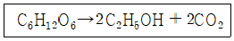
- 0.117
- 0.120
- 0.123
- 0.125
(정답률: 알수없음)
12. 비성장속도(μ)가 ln2h-1인 세포인 농도가 처음의 두 배가 되는데 소요되는 시간(h)은?
- 1
- 2
- 3
- 4
(정답률: 알수없음)
13. 진핵세포만의 특징이 아닌 것은?
- 핵막이 있다.
- 소포체가 있다.
- 골지체가 있다.
- 전사가 세포질에서 일어난다.
(정답률: 알수없음)
14. 다음 중 대사저해(catabolite repression)가 가장 잘 일어나는 기질은?
- 젖당
- 섬유소
- 이눌린
- 포도당
(정답률: 알수없음)
15. Monod 식에 관한 설명으로 옳지 않은 것은?
- 반응 과정은 전통적인 화학반응인 Langmuir-Hinshelwood 반응과 비슷하다.
- Monod 상수는 비성장속도가 최댓값일 때의 제한기질 농도와 같다.
- 비성장속도와 기질 농도 간의 관계에서 기질 농도가 생장을 제한하는 것을 가정한다.
- Monod 식은 생장이 느리고 세포 농도가 낮은 경우에 국한하여 기질 제한 생장 현상을 설명한다.
(정답률: 알수없음)
16. KGMP에 대한 기준 실시상황에 대하여 제조업체가 평가를 받고자 신청한 경우, 식품의약품안전청장이 평가신청자료에 대한 검토를 의뢰할 수 있는 자는?
- 국립보건원장
- 한국약제학회장
- 한국제약협회장
- 중앙약사심의위원장
(정답률: 알수없음)
17. SS한천배지와 같이 살모넬라균과 이질균만을 선택적으로 배양ㆍ증식하는 배지를 지칭하는 것은?
- 사면배지
- 선택배지
- 액체배지
- 최소배지
(정답률: 알수없음)
18. 균일하고 작은 구멍을 갖는 막은 구멍보다 큰 반지름을 갖는 입자를 통과시키지 않는 효과를 이용해 기체를 멸균하는 것은?
- 증기멸균기
- 흡착멸균기
- 표면여과기
- 크로마토그래피
(정답률: 알수없음)
19. 미생물 발효배지를 제조할 때 고려해야 할 사항으로 가장 거리가 먼 것은?
- 배지의 온도
- 미생물의 대사제어
- 대사산물의 생산수율
- 미생물 세포의 성장속도
(정답률: 알수없음)
20. 담수와 같이 시료 속의 균이 적어 접종 시표의 양이 0.1mL를 초과할 때나, 혐기성균이나 미호기성균을 순수 분리할 때 사용하는 배양 방법은?
- 주입평판법(pour plate method)
- 분산도말법(spread plate method)
- 평판도말법(streak plate method)
- 사면배양법(slant-culture method)
(정답률: 알수없음)
2과목: 배양공학
21. 제조합 미생물의 배양 시 재조합 단백질의 발현을 유도할 수 있는 방법으로 옳지 않은 것은?
- trp promoter : 트립토판 첨가
- tac : promoter : IPTG 첨가
- gal promoter : 갈락토즈 첨가
- λPL promoter : 온도 증가 (30℃→42℃)
(정답률: 알수없음)
22. Gluconobacter를 통해 에탄올에서 아세트산을 생산할 때, 산화과정은 몇 번 일어나는가?
- 1번
- 2번
- 3번
- 4번
(정답률: 알수없음)
23. 비증식속도(μ)가 0.5h-1인 미생물을 회분식 배양할 때, 초기 세포농도가 0.02g/L이고 배지 중 포도당의 농도가 20g/L라면 포도당이 모두 소비되는 시간은 약 얼마인가? (단, 포도당에 대한 세포의 yield coefficient(Y)는 0.4이고, 비증식속도는 포도당의 농도와 무관하게 일정하다고 가정한다.)
- 9.99h
- 10.99h
- 11.99h
- 12.99h
(정답률: 알수없음)
24. 공기부양식 반응기에 대한 설명으로 옳은 것은?
- 높은 점도의 뉴턴성 배지에 적합하다.
- 교반탱크 배양기보다 혼합능력이 더 강력하다.
- 동물세포 배양에서 중요한 전단응력을 높게 해준다.
- 기계적인 교반이 없으므로 오염물질의 잠재적인 침투경로를 줄일 수 있다.
(정답률: 알수없음)
25. 다음 미생물 중 일반적으로 항생제 생산에 이용되지 않는 것은?
- 대장균
- 방선균
- 고초균
- 곰팡이
(정답률: 알수없음)
26. 다음 DNA 염기서열에 따라 전사된 후 번역되어 나오는 단백질의 분자량은 약 얼마인가? (단, 아미노산 하나의 분자량은 110으로 계산한다.)
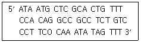
- 1430
- 1650
- 1870
- 2090
(정답률: 알수없음)
27. 다음 미생물 발효 방법 중 고체발효법은?
- 누룩 발효
- 심부 발효
- 투석 발효
- 고정화 발효
(정답률: 알수없음)
28. ED(Entner-Doudoroff) 경로를 이용하여 포도당으로부터 에탄올을 생산하는 미생물은?
- Pichia pastoris
- Bacillus subtilis
- Zymomonas mobilis
- Saccharomyces cereʋisiae
(정답률: 알수없음)
29. 아미노산 생산의 경우 발효 최종산물에 의해 대사경로상의 초기 효소의 활성이 저해되기도 하는데, 이 현상을 지칭하는 것은?
- feedback inhibition
- feedback repression
- feedback inhibition
- feedback repression
(정답률: 알수없음)
30. 에틸알코올을 생산할 수 있는 효모를 말토스 배지에서 배양했지만 효모가 에틸알코올을 생산하지 못한 경우, 다음 중 에틸알코올 생산이 저해된 이유로 가장 적합한 것은?
- 말토스가 독성을 지니고 있기 때문이다.
- 배지에 산소가 과량으로 존재하기 때문이다.
- 효모를 배양한 온도가 상온이었기 때문이다.
- 충분한 단백질이 배지에 공급되지 못했기 때문이다.
(정답률: 알수없음)
31. 염색체의 외부에 자율적으로 존재하는 이중 가닥의 DNA로, 자기 복제를 하는 것은?
- Hfr 균주
- 프로파지
- 플라스미드
- 용원성 파지
(정답률: 알수없음)
32. 반응기 내 호기성 미생물의 산소 공급에 관한 내용으로 옳은 것은?
- 호기성 미생물이 필요로 하는 용존산소를 낮은 농도로 공급한다.
- 잠시 동안의 산소공급 중단은 호기성 미생물의 신진대사 과정과 관련이 없다.
- 산소는 기체상의 분자에서 액세상의 분자로 전환되어야 세포 내로 확산되어 들어갈 수 있다.
- 산소는 용해도가 높기 때문에 반응기 내로 적은 양을 공급하고 잘 휘저어 주기만 하면 충분하다.
(정답률: 알수없음)
33. 비극성(소수성)을 나타내는 아미노산이 아닌 것은?
- 류신
- 라이신
- 트립토판
- 페닐알라닌
(정답률: 알수없음)
34. 바이오매스를 원료로 사용하여 기존의 화석원료를 이용하는 화학산업으로부터 제공받은 다양한 화학물질, 에너지 및 고분자 등을 대체생산할 수 있는 산업에 관련된 바이오기술을 뜻하는 용어는?
- red biotechnology
- black biotechnology
- white biotechnology
- green biotechnology
(정답률: 알수없음)
35. HMP(hexose-monophosphate) 경로를 통해 2분자의 포도당이 2분자의 리보스-5-인산(ribose-5-phosphate)으로 전환될 때, 몇 개의 이산화탄소(CO2)가 생성되는가?
- 1개
- 2개
- 3개
- 4개
(정답률: 알수없음)
36. 생물반응기를 이용한 미생물 배양액을 측정할 때, 다음 중 온라인 측정이 가장 어려운 것은?
- 온도
- 수소이온농도
- 총 단백질 농도
- 용존산소의 농도
(정답률: 알수없음)
37. 다음 화학반응식에 따라 포도당으로부터 에탄올을 생산할 경우, 100g/L의 에탄올을 생산하는데 필요한 포도당의 농도는 약 얼마인가? (단, 포도당은 이 반응에만 사용된다고 가정한다.)
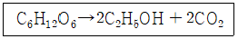
- 45.5g/L
- 93.4g/L
- 180g/L
- 195.7g/L
(정답률: 알수없음)
38. 전분을 분해하는 효소가 아닌 것은?
- 인베르타아제(invertase)
- 알파 아밀라아제(alpha-amylase)
- 베타 아밀라아제(bata--amylase)
- 글루코아밀라아제(glucoamylase)
(정답률: 알수없음)
39. glycolysis의 과정 중 주요 속도결정 단계는?
- glucose에서 glucose-6-phosphate로 되는 단계
- phoshoenolpyruvate에서 pyruvate로 되는 단계
- glucose-6-phosphate에서 glucose-6-phosphate로 되는 단계
- glucose-6-phosphate에서 glucose-6,6-bisphosphate로 되는 단계
(정답률: 알수없음)
40. 해당과정의 주된 대사산물은?
- 라이신(lysine)
- 구연산(citric acid)
- 옥살산(oxalic acid)
- 피루브산(pyruvic acid)
(정답률: 알수없음)
3과목: 생물반응공학
41. 한외여과법에 관한 설명으로 옳지 않은 것은?
- 젤 층이 형성될 수 있다.
- 단백질 농축에 사용된다.
- 농도 구배에 의한 농도 분극이 발생한다.
- 농도 차와 이온 결합에 의한 분리방법이다.
(정답률: 알수없음)
42. 맥주공장에서 원심분리한 후 남은 효모를 제거하기 위해 마지막 정제단게에 사용하는 여과 장치는?
- filter press
- candle type
- vertical leaf
- horizontal plate
(정답률: 알수없음)
43. 다음 크로마토그래피법 중 원리가 다른 것은?
- 분자체 크로마토그래피
- 젤 여파 크로마토그래피
- 젤 흡착 크로마토그래피
- 크기배제 크로마토그래피
(정답률: 알수없음)
44. 다음 막 분리기술 중 가장 작은 분자량의 물질을 분리할 수 있는 것은?
- 한외여과(ultrafiltration)
- 나노여과(nanofiltration)
- 미세여과(microfiltration)
- 역삼투(reverse osmosis)
(정답률: 알수없음)
45. 페니실린 G의 분리 정제 공정을 올바르게 나열한 것은?
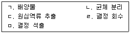
- ㄱ→ㄴ→ㄷ→ㄹ→ㅁ
- ㄱ→ㄴ→ㄷ→ㅁ→ㄹ
- ㄱ→ㄷ→ㄴ→ㅁ→ㄹ
- ㄱ→ㄷ→ㅁ→ㄴ→ㄹ
(정답률: 알수없음)
46. 단백질이나 핵산과 같은 거대 분자를 전하에 의해서 물리적으로 분리하는 방법은?
- 옹축
- 클로닝
- 전기영동
- 중합효소연쇄반응(PCR)
(정답률: 알수없음)
47. 면역친화성의 원리로 단백질을 정량하는 방법은?
- ELISA
- 뷰렛(Biuret)
- 로우리(Lowry)
- 쿠마지(Coomassie)
(정답률: 알수없음)
48. 기름성분이 5% 이상 함유된 액체 상태의 폐유를 처분할 때, 처리기준으로 옳지 않은 것은?
- 분리ㆍ중류ㆍ추출ㆍ여과ㆍ열분해의 방법으로 정제하여 처분한다.
- 기름과 물을 분리하여 분리된 기름성분은 소각하고 남은 물은 방류한다.
- 응집ㆍ침전방법으로 처리한 후 그 잔재물은 소각한다.
- 증발ㆍ농축방법으로 처리한 후 그 잔재물은 소각하거나 안전화 처분한다.
(정답률: 알수없음)
49. 황산암모늄 등의 염에 의한 단백질의 침전에 관한 설명으로 옳지 않은 것은?
- 단백질 침전을 위한 암모늄염의 음이온은 -1가보다는 -2가 더 효과적이다.
- 황산암모늄을 이용한 염석은 효소의 변성이 적고, 실온에서 실시할 수 있다.
- 보통 1.5M 이상의 고농도 황산암모늄은 단백질의 용해도를 떨어뜨리는 염석 효과가 있다.
- 황산암모늄으로 침전된 단백질은 불안정하여 활성 유지가 어렵기 때문에 장기간 침전상태로 보관하기 부적합하다.
(정답률: 알수없음)
50. 크로마토그래피 컬럼에서 일정 압력을 이용해 용액을 주입할 때, 겉보기 유속이 10mL/min이고 컬럼 내 공극률이 0.25이었다면 실제 컬럼 내에서 충진물 사이에 흐르는 용액의 내부유속(mL/min)은?
- 4
- 10
- 25
- 40
(정답률: 알수없음)
51. 열에 매우 민감한 액체, 비타민, 의약품 등을 40℃ 이하에서 농축하기 위해 사용하는 증발기는?
- 열펌프식 증발기
- 칼란드리아식 증발기
- 열적 증기재압축 증발기
- 기계적 증기재압축 증발기
(정답률: 알수없음)
52. 용액 및 슬러리를 건조하는 장치로 적합하지 않은 것은?
- 교반건조기
- 분무건조기
- 회전건조기
- 드럼건조기
(정답률: 알수없음)
53. 다음 공정 중 세포의 수분을 제거하기에 가장 적합한 것은?
- 건조
- 여과
- 침강
- 원심분리
(정답률: 알수없음)
54. 흡착 등온곡선에 관한 식은?
- Monod 식
- Tessier 식
- Freundich 식
- Michaelis-Menten 식
(정답률: 알수없음)
55. 크로마토그래피 담체의 CIP(cleaning in place)를 위해 사용되는 물질로 가장 적합한 것은?
- Urea
- NaOH
- NH4OH
- Tween 80
(정답률: 알수없음)
56. 셀룰로오스 아세테이트 한외여과막을 이용하는 한외여과 공정에서 유입되는 용액의 염화나트륨 농도는 10kg/m3이고, 여과되는 여액의 염화나트륨 농도는 0.58kg/m3일 때, 염화나트륨에 대한 한외여과막의 배제계수는?
- 0.942
- 0.958
- 0.962
- 0.973
(정답률: 알수없음)
57. 고압의 액체와 조밀한 컬럼 충전을 통해 용질에 대해 빠르고 높은 분리능을 가지며, 분석용으로 주로 사용되는 크로마토그래피는?
- 이온 크로마토그래피(IC)
- 얇은 층 크로마토그래피(TLC)
- 고속 단백질 크로마토그래피(FPLC)
- 고성능 액체 크로마토그래피(HPLC)
(정답률: 알수없음)
58. 불용성 생성물을 분리하는데 사용되는 방법이 아닌 것은?
- 여과
- 응집
- 추출
- 원심분리
(정답률: 알수없음)
59. 항생제, 유기산, 아미노산 및 세포 외 효소와 같은 가용성 발효생성물을 회수하기 위한 방법으로 적합하지 않은 것은?
- 흡착
- 원심분리
- 한외여과
- 크로마토그래피
(정답률: 알수없음)
60. HPLC를 이용해 시료를 분석할 때, 탈기의 목적이 아닌 것은?
- 펌프 압력 변화 방지
- 컬럼에서의 압력 저하 방지
- 용매 내에 녹아 있는 기체 제거
- 시료 여과 후 시료에 형성되는 기포 제거
(정답률: 알수없음)
4과목: 생물분리공학
61. 효소에 관한 설명으로 옳은 것은?
- 무생물학적 촉매이다.
- 효소는 불균일 촉매이다.
- 효소 반응에서 생성물의 생성 속도는 계속 증가한다.
- 기질과 상호작용이 일어나는 활성 자리를 한 개 이상 가지는 커다란 단백질 분자이다.
(정답률: 알수없음)
62. 235nm에서 최대 흡수를 나타내는 화합물을 자외선 분광광도계로 분석하려고 한다. 시료 농도가 2.0×10-4mol/L, 큐벳 폭이 1.0cm이고 입사광의 20%를 방출할 때, 이 화합물의 몰 흡광계수(L/molㆍcom)는 약 얼마인가?
- 1.0×103
- 3.5×10-3
- 1.0×103
- 3.5×10-3
(정답률: 알수없음)
63. 생성물의 농도를 정량분석하는 방법 중, 미지시료에 분석대상물질과 동일한 물질을 정량적으로 첨가한 후 증가된 신호를 측정하는 것은?
- 면적 표준화법
- 표준물 첨가법
- 내부 표준물질법
- 감응인자 보정 표준화법
(정답률: 알수없음)
64. 연속식 멸균에 대한 설명으로 옳지 않은 것은?
- 가열과 냉각기간이 짧다.
- 배지 희석과 거품 형성을 줄일 수 있다.
- 고온에서의 짧은 노출시간으로 배지를 덜 손상시킨다.
- 회분식 멸균에 비해 제어가 용이하고 발효기에서의 작업 중단시간이 감소된다.
(정답률: 알수없음)
65. 다음 설명의 빈 칸에 들어갈 용어를 순서대로 나열한 것은?
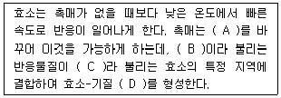
- A-온도, B-산화물, C-접촉자리, D-리간드
- A-온도, B-산화물, C-활성자리, D-복합체
- A-반응경로, B-기질, C-접촉자리, D-리간드
- A-반응경로, B-기질, C-활성자리, D-복합체
(정답률: 알수없음)
66. 효소의 불활성화(deactivation)에 관한 설명으로 옳은 것은?
- 효소는 온도가 달라져도 활성도가 일정하다.
- 효소는 pH에 상관없이 불활성화 정도가 일정하다.
- 효소는 최적 pH에서 멀어지면 불활성화 속도가 빨라진다.
- 효소는 최적 pH보다 낮은 pH에서는 불활성화 속도가 느리고 높은 pH에서는 불활성화 속도가 빠르다.
(정답률: 알수없음)
67. 기질의 농도가 0.1M, Michaelis 상수 값이 10-6, 초기 반응속도가 0.1μmol/분일 때 최대 반응속도(μmol/분)는?
- 0.1
- 1
- 2
- 106
(정답률: 알수없음)
68. 당을 분석하는 방법인 DNS(3,5-dinitrosalicylic acid)법으로 분석할 수 없는 것은?
- 설탕
- 포도당
- 자일로스
- 갈락토오스
(정답률: 알수없음)
69. 효소 고정화에 있어 흡착법의 장점이 아닌 것은?
- 결합의 세기가 강하다.
- 고정화 과정이 간단하다.
- 이용할 수 있는 고정화 담체가 다양하다.
- 효소들은 보통 흡착에 의해 불활성화되지 않는다.
(정답률: 알수없음)
70. 녹말이 유일한 탄소원인 세균 A와 세균 B의 세포막에 각각 존재하는 효소 a와 효소 b의 촉매반응속도는 Michaelis-Menten 식을 따르며, 다음은 각 효소의 특성을 설명한 것이다. 두 효소의 농도가 같을 때, a와 b의 촉매 효율(k2/Km)의 등호 관계는? (단, A는 a만을, B는 b만을 발현하고, 반응은
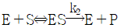
에 따른다.)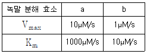
- a>b
- a<b
- a=b
- a=eb
(정답률: 알수없음)
71. 촉매를 구성하는 3가지 요소가 아닌 것은?
- 중점제
- 증진제
- 지지체
- 활성물질
(정답률: 알수없음)
72. 효소의 저해반응에 관한 설명으로 옳지 않은 것은?
- 경쟁적 저해제는 일반적으로 기질 유사체이다.
- 비경쟁적 저해제는 기질 유사성과 관련이 없다.
- 경쟁적 저해반응은 기질 농도를 낮춤으로써 극복된다.
- 중금속에 의한 비가역 저해반응은 chelating agent를 이용하면 가역화할 수 있다.
(정답률: 알수없음)
73. 효소고정화 방법 중 포괄법에 일반적으로 가장 많이 사용되는 지지체는?
- alumina
- CM-sephadex
- polyacrylamide
- DEAE-cellulose
(정답률: 알수없음)
74. 화학촉매에 대한 설명으로 옳지 않은 것은?
- 반응의 평형을 바꿀 수 없다.
- 반응 경로를 만들어 반응속도를 증진한다.
- 기질과 접촉하여 활성화 에너지를 증가시킨다.
- 여러 가지 물질 생성되는 반응에서는 특정 생성물에 대한 선택성을 높이기 위해 촉매를 사용할 수 있다.
(정답률: 알수없음)
75. 다음 반응 메커니즘을 통해 Michaelis-Menten식을 유도할 때 필요한 가정으로 가장 타당한 것은?
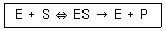
- 기질 S의 농도가 높아야 한다.
- 효소 E의 농도가 높아야 한다.
- ES의 생성반응이 빠르게 평형에 도달한다.
- ES의 소멸속도가 다른 반응에 비해 매우 빠르다.
(정답률: 알수없음)
76. 촉매 반응 표면에서 일어나는 현상에 관한 설명으로 옳지 않은 것은?
- 흡착물의 결합세기는 촉매반응의 속도를 결정하는 기준이 될 수 없다.
- 반응이 일어나는 조건에서 적외선 분광법으로 촉매 반응의 중간체를 유추할 수 있다.
- 표면 반응속도보다 반응물의 흡착속도나 생성물의 탈착속도가 느리면 흡착이나 탈착 과정이 반응의 속도 결정 단계가 된다.
- 촉매와 반응물 또는 생성물 사이의 화학 흡착이 강하면 반응물은 촉매독으로 인해 촉매작용이 저하된다.
(정답률: 알수없음)
77. 효소와 담체 간의 물리ㆍ화하적 힘을 이용하지 않는 효소 고정화 방법은?
- 가교법
- 담체결합법
- 공유결합법
- 미세캡슐화법
(정답률: 알수없음)
78. 대기의 이산화황(SO2)을 삼산화황(SO3)으로 산화시켜 산성비를 내리게 하는 원인으로 옳은 것은?
- SO2가 맑고 건조한 공기 중에서 잘 산화되기 때문이다.
- 공기 중의 질소가 산소와 SO2 간의 반응에 촉매 역할을 하기 때문이다.
- 공기 중의 먼지 입자나 물방울이 산소와 SO2의 반응에 촉매 역할을 하기 때문이다.
- 공기 중의 산소가 SO2와의 반응에 반응물과 촉매의 역할을 동시에 하기 때문이다.
(정답률: 알수없음)
79. 고정화 효소에 의한 반응에서 확산저항이 효소 반응속도에 미치는 영향은 효소 반응속도와 기질 확산속도의 상대속도에 따라 달라지는데, 이 상대속도 값을 부르는 용어는?
- Froude 수
- Thiele 계수
- 유효확산계수
- Damkohler 수
(정답률: 알수없음)
80. 반응물과 촉매의 접촉시간을 정밀하게 제어하기 위해 사용되는 유동층 반응기에 관한 설명으로 옳지 않은 것은?
- 촉매와 반응물을 섞어 상승형 관 반응기에 공급한다.
- 반응물은 반응기에서 최대한 오랜 시간 접촉분해시켜야 한다.
- 반응이 끝난 후에는 촉매와 생성물을 싸이크론에서 분리한다.
- 사용한 촉매는 재생기로 보내 공기를 불어 넣으면서 가열하여 촉매에 침적된 탄소를 태워 제거한다.
(정답률: 알수없음)
5과목: 생물공학개론
81. 유효기한에 도달하는 원자재를 먼저 사용하는 재고관리 방법은?
- 경고선출
- 랜덤선출
- 선입선출
- 선한선출
(정답률: 알수없음)
82. 칼 또는 창과 같은 예리한 물체에 찔려서 입은 상처를 무엇이라 하는가?
- 자상
- 절상
- 화상
- 찰과상
(정답률: 알수없음)
83. 전체 부피가 100mL인 소분용기에 화학물질 80mL을 옮겨 담았을 때, 소분용기에 부착하지 않아도 되는 경고표시는?
- 명칭
- 신호어
- 그림문자
- 유해ㆍ위험문구
(정답률: 알수없음)
84. 품질관리 7가지 도구에 해당하지 않는 것은?
- 흐름도
- 체크시트
- 히스토그램
- 어골도(특성요인도)
(정답률: 알수없음)
85. 화재ㆍ폭발사고 발생 시의 대처법으로 옳지 않은 것은?
- 초기 진압이 어렵다고 판단될 경우에는 가스 및 전기의 중앙 밸브를 통제하고 즉시 대피한다.
- 대피할 때는 젖은 수건 등으로 입과 코를 막고 호흡을 짧게 하며 낮은 자세로 이동한다.
- 화재 경보 사이렌을 듣는 즉시 시야를 확보하고 승강기를 이용하여 지정된 집결 장소로 신속하게 이동한다.
- 머리나 옷에 불씨가 옮겨 붙었을 경우 멈춰서기-눕기-구르기의 방법을 따르고, 물 및 담요 등을 이용하여 불을 끈다.
(정답률: 알수없음)
86. 유전자재조합실험지침상 생물체의 위험군 분류에서 Bacillus anthracis가 속하는 위험군은?
- 제1위험군
- 제2위험군
- 제3위험군
- 제4위험군
(정답률: 알수없음)
87. 응급처치의 주된 목적이 아닌 것은?
- 응급환자의 생명 구조
- 사업주의 피해 최소화
- 통증 감소 및 악화 방지
- 가치 있는 삶을 영위할 수 있도록 회복을 도움
(정답률: 알수없음)
88. 다음 설명의 빈 칸에 들어갈 말을 순서대로 나열한 것은?
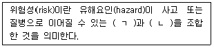
- ㄱ : 가능성, ㄴ : 중대성
- ㄱ : 가능성, ㄴ : 유해성
- ㄱ : 안정성, ㄴ : 중대성
- ㄱ : 안정성, ㄴ : 유해성
(정답률: 알수없음)
89. 실험실에서 취급하고 있는 유해물질에 대한 정보로 실험실 종사자가 숙지 및 게시해야 하는 문서는?
- GHS
- NCIS
- MSDS
- CAS number
(정답률: 알수없음)
90. 다음에서 설명하는 약품은?
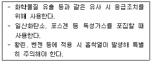
- 규조트
- 소석회
- 활성탄
- 제올라이트
(정답률: 알수없음)
91. 생물의약품 생산시설 품질시스템의 유효성을 제고하기 위한 내부 감사 준비단계의 활동 사항이 아닌 것은?
- 감사팀을 구성한다.
- 감사전략을 수립한다.
- 감사계획을 수립한다.
- 감사보고서를 작성한다.
(정답률: 알수없음)
92. 품질관리도구인 파레토 다이어그램의 용도는?
- 요인과 결과의 상관관계를 측정한다.
- 규격과 비교하여 공정능력을 측정한다.
- 품질에 영향을 주는 주요 요인들을 찾는다.
- 품질의 이상 원인을 확인하여 공정을 관리한다.
(정답률: 알수없음)
93. 화학물질을 사용하는 작업환경의 관리상태 체크리스트에서 물질의 유해성을 평가하는 내용이 아닌 것은?
- 현재 유해물질 취급 공정의 폐쇄가 가능한가?
- 현재 사용하는 화학물질의 사용량을 줄일 수 있는가?
- 현재 발암성 물질을 취급하고 있다면 비발암성 물질로 대체 가능한가?
- 현재 취급하고 있는 물질보다 독성이 적은 물질(노출기준 수치가 높은)로 대체 가능한가?
(정답률: 알수없음)
94. 표준작업절차서(SOP)의 구성항목이 아닌 것은?
- 목표효율
- 적용범위
- 책임과 권한
- 용어의 정의
(정답률: 알수없음)
95. 수소기체 4.36L를 얻기 위해 수소화바륨과 물을 이용할 때, 필요한 수소화바륨의 양(g)은 약 얼마인가? (단, 온도는 20℃, 압력은 0.975 atm, BaH2 분자량은 139.3g/mol이고, R=0.08206Lㆍatm/molㆍK인 이상기체 상태 조건이라고 가정한다.)
- 초기 진압이 어렵다고 판단될 경우에는 가스 및 전기의 중앙 밸브를 통제하고 즉시 대피한다.
- 대피할 때는 젖은 수건 등으로 입과 코를 막고 호흡을 짧게 하며 낮은 자세로 이동한다.
- 화재 경도 사이렌을 듣는 즉시 시야를 확보하고 승강기를 히용하여 지정된 집결 장소로 신속하게 이동한다.
- 머리나 옷에 불씨가 옮겨 붙었을 경우 멈춰서기-눈기-구르기의 방법을 따르고, 물 및 담요 등을 이용하여 불을 끈다.
(정답률: 알수없음)
96. LMO 연구시설 안전관리 등급 분류상 다음 설명에 해당하는 시설의 등급은?
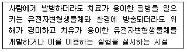
- 1등급
- 2등급
- 3등급
- 4등급
(정답률: 알수없음)
97. 동물의 지육 등 또는 식물의 종자나 과육으로부터 얻어진 추출물 중 동식물유류의 분류기준은?
- 1기압에서 인화점이 100℃ 미만인 것
- 1기압에서 인화점이 250℃ 미만인 것
- 1기압에서 인화점이 300℃ 미만인 것
- 1기압에서 인화점이 350℃ 미만인 것
(정답률: 알수없음)
98. 알루미늄 5g과 Fe2O3가 다음 식과 같이 화학양론적으로 반응할 때, 반응에 따른 열의 변화는? (단, 알루미늄의 원자량은 26.98g/mol이다.)
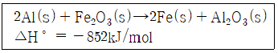
- 78.9kJ의 열을 방출한다.
- 78.9kJ의 열을 흡수한다.
- 158.4kJ의 열을 방출한다.
- 158.4kJ의 열을 흡수한다.
(정답률: 알수없음)
99. 위험성평가 정차 중 유해ㆍ위험요인별로 추정한 위험성의 크기가 허용 가능한 범위인지 판단하는 단계는?
- 위험성 추정
- 위험성 결정
- 위험성 기록
- 위험성 감소 대책수립 및 실행
(정답률: 알수없음)
100. 다음에서 설명하는 것은?
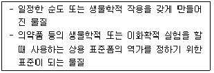
- 원검체
- 대조물질
- 자가물질
- 기준표준물질
(정답률: 알수없음)